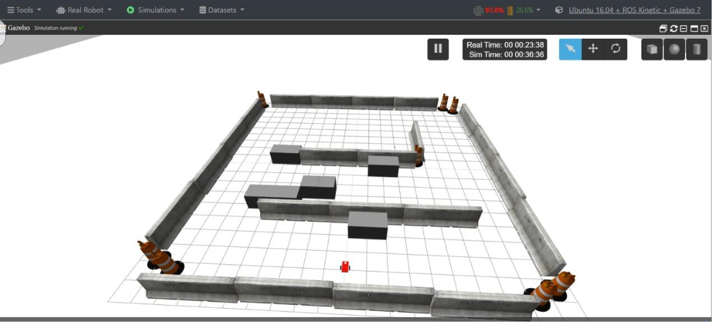
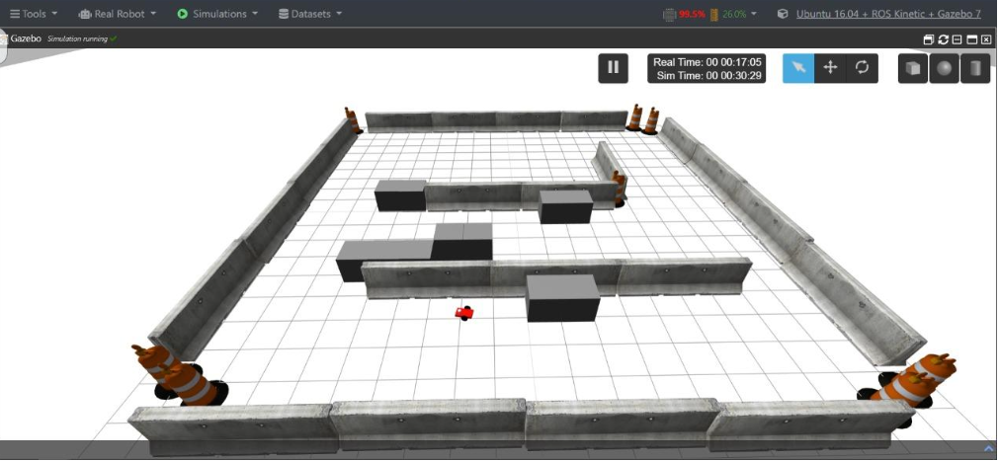
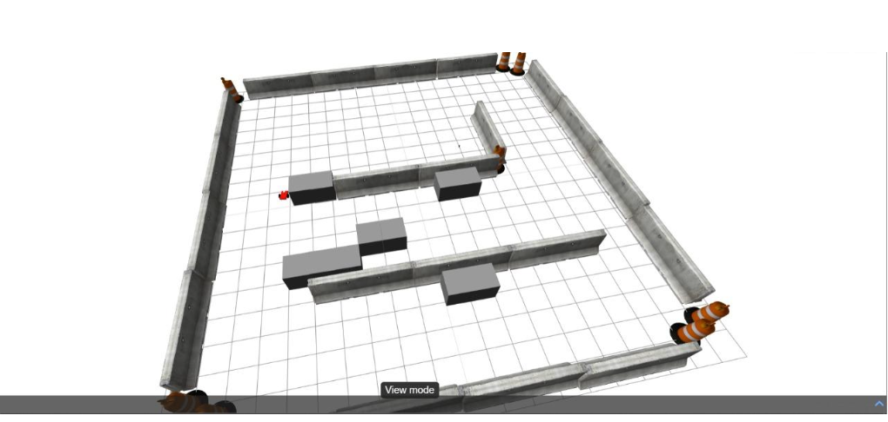
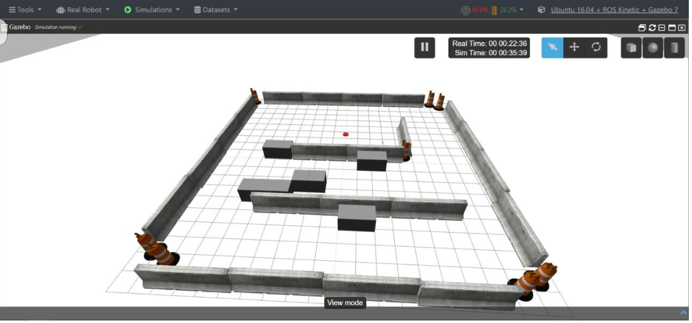

Initial simulation of the Turtlebot using ROS Noetic and Gazebo. The robot is placed in a dynamic environment with mapped walls and obstacles.

Real-time mapping and obstacle detection via LIDAR and SLAM. Our system identifies navigation barriers and dynamically adapts to changes.

Successful path planning and navigation using the ROS Navigation Stack. The robot efficiently reaches the goal without collisions.

Final position achieved with optimal path traversal, showcasing the robot's ability to navigate complex environments autonomously.